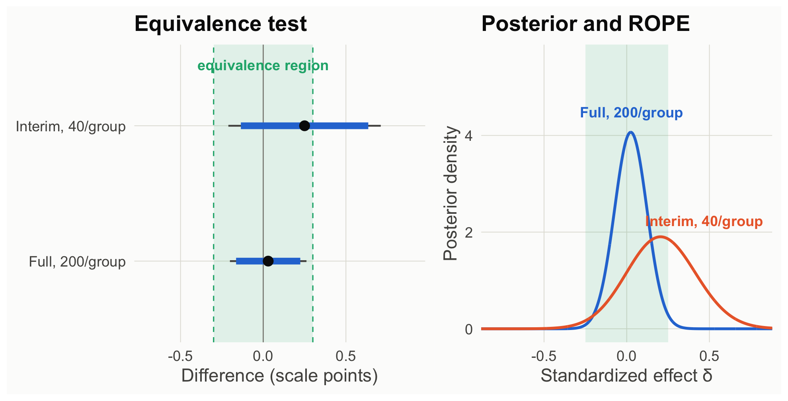

neutral <- read.csv("data/story_neutral_n200.csv")
# "pilot" = the interim look: the first 40 participants per group of the same study
pilot <- rbind(head(neutral[neutral$condition == "rewarded", ], 40),
head(neutral[neutral$condition == "punished", ], 40))
sl_p <- two_group(pilot); sl_f <- two_group(neutral)Scene 3 · When a theory predicts nothing
Testing a boundary condition
ADT says endings matter because viewers like the character. So the effect should disappear when viewers have no reason to like the character: if the character does something morally neutral instead of returning the wallet (say, they buy a coffee), viewers form no disposition toward them, and a reward or punishment at the end should leave enjoyment unchanged. A rival “happy ending” account (people enjoy stories that end well, whoever the character is) predicts the effect survives. Study 2 is the boundary test. A theory that says where an effect should not appear is a stronger theory, but only if you can support a null.
Predict first
Study 2 took an interim look at 40 per group and then continued to 200 per group. Suppose both give p > .25. Can you claim the effect vanished?
Explainer: SESOI, TOST, ROPE, BF₀₁, interim look
- SESOI (smallest effect size of interest): the smallest effect that would matter for your theory or for practice. Anything smaller counts as “no effect” for your purposes. Choosing it is a substantive decision to justify and preregister (Lakens et al., 2018).
- TOST (two one-sided tests): tests whether the true difference is above −SESOI and below +SESOI. If both tests reject, the effect is statistically equivalent to zero within your bounds. With α = .05 for each test, this is the same as checking whether the 90% CI falls inside the bounds.
- ROPE (region of practical equivalence): the Bayesian counterpart, a range of δ values treated as practically zero. The quantity reported is the share of the posterior inside it (Kruschke & Liddell, 2018).
- BF₀₁: the Bayes factor with the null on top. BF₀₁ = 8 means the data were eight times more likely under “no effect” than under the alternative.
- Interim look: analyzing data partway through collection. Here it is the first 40 participants per group of the same 200-per-group study.
Frequentist: a nonsignificant result is not evidence of absence, but an equivalence test can be
First we decide what “no effect” means: the smallest effect size of interest (SESOI). Here we stipulate ±0.3 scale points (about δ = 0.25), smaller than the effect in Study 1. That choice deserves argument; the analysis is only as good as it is. Then the two one-sided tests (TOST) procedure asks whether the difference is significantly above −0.3 and significantly below +0.3 (Lakens et al., 2018). Equivalently: is the 90% CI inside the bounds?
sesoi <- 0.3
rbind(
interim = c(diff = sl_p$diff, p_nhst = sl_p$p, p_tost = tost(sl_p, sesoi)$p_tost),
full = c(diff = sl_f$diff, p_nhst = sl_f$p, p_tost = tost(sl_f, sesoi)$p_tost)
) |> round(3) diff p_nhst p_tost
interim 0.25 0.283 0.415
full 0.03 0.799 0.011Bayesian: evidence for the null, and posterior mass inside the “no effect” region
The Bayes factor can favor the null directly: BF₀₁ = 1 / BF₁₀. And the posterior on δ tells us how much probability sits inside a region of practical equivalence (ROPE), here δ within ±0.25, matching the SESOI (Kruschke & Liddell, 2018).
rope <- c(-sesoi, sesoi) / 1.2 # ±0.3 points on a scale with SD ≈ 1.2
prior_happy <- prior_adt # the happy-ending account predicts Study 1's effect survives: Normal(0.3, 0.15)
bayes_null <- function(s) {
post <- delta_posterior(s, prior_default)
c(BF01_vs_default = 1 / bf_vs_null(s, prior_default),
BF01_vs_happy = 1 / bf_vs_null(s, prior_happy),
P_in_ROPE = unname(post_summary(post$x, post$posterior, rope = rope)["p_rope"]))
}
rbind(interim = bayes_null(sl_p), full = bayes_null(sl_f)) |> round(3) BF01_vs_default BF01_vs_happy P_in_ROPE
interim 2.594 0.687 0.564
full 8.754 5.562 0.986Code
ci_rows <- rbind(
data.frame(study = "Interim, 40/group", est = sl_p$diff, lo90 = tost(sl_p, sesoi)$ci90[1], hi90 = tost(sl_p, sesoi)$ci90[2], lo95 = sl_p$ci[1], hi95 = sl_p$ci[2]),
data.frame(study = "Full, 200/group", est = sl_f$diff, lo90 = tost(sl_f, sesoi)$ci90[1], hi90 = tost(sl_f, sesoi)$ci90[2], lo95 = sl_f$ci[1], hi95 = sl_f$ci[2]))
ci_rows$study <- factor(ci_rows$study, levels = rev(ci_rows$study))
pL <- ggplot(ci_rows, aes(y = study)) +
annotate("rect", xmin = -sesoi, xmax = sesoi, ymin = -Inf, ymax = Inf, fill = pal[["aqua"]], alpha = 0.12) +
geom_vline(xintercept = c(-sesoi, sesoi), linetype = "dashed", color = pal[["aqua"]]) +
geom_vline(xintercept = 0, color = pal[["gray"]], linewidth = 0.4) +
geom_errorbarh(aes(xmin = lo95, xmax = hi95), height = 0, linewidth = 0.7, color = pal[["ink2"]]) +
geom_errorbarh(aes(xmin = lo90, xmax = hi90), height = 0, linewidth = 2.6, color = pal[["blue"]]) +
geom_point(aes(x = est), size = 3.5, color = pal[["ink"]]) +
annotate("text", x = 0, y = 2.45, label = "equivalence region", color = pal[["aqua"]], size = 4.2, fontface = "bold") +
labs(x = "Difference (scale points)", y = NULL, title = "Equivalence test") +
coord_cartesian(xlim = c(-0.7, 0.9)) + theme_demo()
posts <- rbind(data.frame(delta_posterior(sl_p, prior_default)[, c("x", "posterior")], study = "Interim, 40/group"),
data.frame(delta_posterior(sl_f, prior_default)[, c("x", "posterior")], study = "Full, 200/group"))
pl <- data.frame(x = c(0.47, 0.03), posterior = c(2.0, 4.25), study = c("Interim, 40/group", "Full, 200/group"))
pR <- ggplot(posts, aes(x, posterior, color = study)) +
annotate("rect", xmin = rope[1], xmax = rope[2], ymin = -Inf, ymax = Inf, fill = pal[["aqua"]], alpha = 0.12) +
geom_line(linewidth = 1.1) +
geom_text(data = pl, aes(label = study), vjust = -0.6, size = 4.2, fontface = "bold") +
scale_color_manual(values = c("Interim, 40/group" = pal[["orange"]], "Full, 200/group" = pal[["blue"]])) +
coord_cartesian(xlim = c(-0.8, 0.8), ylim = c(0, 5.6)) +
labs(x = "Standardized effect δ", y = "Posterior density", title = "Posterior and ROPE") +
theme_demo()
pL + pR
How to read this figure
- Left: each row is one look at the data. The dot is the observed difference; the thick blue bar is the 90% CI and the thin line the 95% CI. The shaded band marks the ±0.3-point equivalence bounds.
- Equivalence is established when the thick 90% bar lies entirely inside the band. At 40 per group it sticks out; at 200 per group it fits.
- Right: the posterior for δ (under the default prior) at each look. The shaded band is the ROPE (±0.25 in δ units, the same ±0.3 points). The more of a curve’s area inside the band, the stronger the case that the effect is practically zero.
At the interim look, p = .283 says nothing about absence: the TOST fails (p = .415). The default Bayes factor leans toward the null (2.6 to 1), but against the rival that matters, the happy-ending account, the interim data slightly favor it (BF₀₁ = 0.69). Which alternative you test changes the verdict. At 200 per group, both frameworks support the boundary claim: the TOST rejects true differences of ±0.3 points or larger (p = .011), and the data favor the null by about 9 to 1 over the default alternative and 5.6 to 1 over the happy-ending account.
What each framework lets you say (full study)
- Frequentist: “We can reject true differences of ±0.3 points or larger (TOST p = .011), so the effect, if any, is smaller than our smallest effect of interest.”
- Bayesian: “The data were 9 times more likely under no effect than under the default alternative, and 5.6 times more likely than under the happy-ending account; 99% of the posterior lies within ±0.25 SD.”
- Both require that you said in advance what counts as “no effect” (a SESOI or a prior). Neither lets you conclude absence from p > .05 alone (Dienes, 2014; Lakens et al., 2020).
Theory-building takeaway. Boundary conditions are how theories become specific. Supporting “the effect vanishes for a morally neutral character” separates ADT from a happy-ending account, but only a design powered for equivalence can deliver that.
Your turn
- Shrink the SESOI to ±0.1 points. What sample size would the TOST need?
- At the interim look, BF₀₁ was about 2.6 against the default alternative but below 1 against the happy-ending account. Why does the default alternative lose to the null so easily? (Hint: look at what the Cauchy prior predicts in Scene 2.)